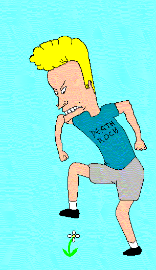
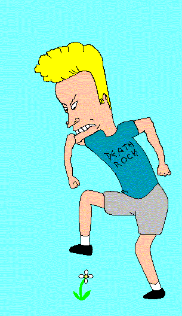
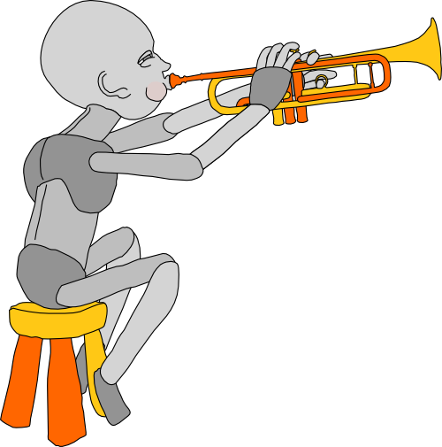

Streaming Templating
Why Would You Want That?
by Pedro Teixeira / @pgte
self.dump()
I'm from a portuguese Island called Madeira
I created and maintain some open-source Node.js modules
- nock
- pipeline
- woosh
- konphyg
- banzai
- mturk
- carrier
- fake-queue
- kinect
- ...
Author of 2 Node Books

Co-founder of The Node Firm
 thenodefirm.com
thenodefirm.com
Engineer At Nodejitsu

Streaming
Why?
Slow Clients
Mobile Clients
Streaming is the opposite of Buffering
This is particularly important when you have slow clients.
Slow clients are not compatible with buffering
Back-pressure

AKA "pausing the source stream until the target stream drains"
Meanwhile, in Node-land...
source_stream .pipe(filter_stream) .pipe(target_stream)
Less buffering
= Smaller memory profile
= Better scalability

"Streaming doesn't make your program go faster.
It makes it not die."
— Isaac Z. Schlueter

 ||

||

STREAM OR DIE
F*cking Templating
How does it work?

Typical workflow
- Read a file into memory
- Parse it
- Compile it
- Either
- Apply a Payload
- or
- Run it (E*) — ERB, EJS
- Push the output to the response body
Typical workflow
- Buffer
- CPU
- CPU
- CPU
- Buffer
The Streaming Way

Goals
- Reduce TTFB
- Minimize buffering
- Don't block! (CPU)
I need
- Streaming Parser (think SAX)
- Template Engine
Source Format
Pure HTML — What else?

Node Selector
CSS selectors are stream-friendly!

Yay!
Markup modifier / injector

JavaScript callbacks are your friends!
Trumpet
Selection example
var trumpet = require('trumpet');
var tr = trumpet();
tr.select('.b span', function (node) {
node.html(function (html) {
console.log(node.name + ': ' + html);
});
});
var fs = require('fs');
fs.createReadStream(__dirname + '/select.html')
.pipe(tr);select.html
<html>
<head>
<title>beep</title>
</head>
<body>
<div class="a">¡¡¡</div>
<div class="b">
<span>tacos</span>
<span>y</span>
<span>burritos</span>
</div>
<div class="a">!!!</div>
</body>
</html>output
$ node select.js
span: tacos
span: y
span: burritosUpdate Example
var trumpet = require('trumpet');
var tr = trumpet();
tr.update('.b span', function (html, node) {
return html.toUpperCase();
});
tr.update('.c', '---');
tr.remove('.d');
tr.remove('.e');
var fs = require('fs');
fs.createReadStream(__dirname + '/update.html')
.pipe(tr)
.pipe(process.stdout);update.html
<html>
<head>
<title>beep</title>
</head>
<body>
<div class="a">¡¡¡</div>
<div class="b">
<span>tacos</span>
<span>y</span>
<span>burritos</span>
</div>
<div class="a">!!!</div>
<div class="c">
<span>beep</span>
<span>boop</span>
</div>
<div class="d">
<span>x</span>
<span>y</span>
</div>
</body>
</html>output:
$ node update.js
<html>
<head>
<title>beep</title>
</head>
<body>
<div class="a">¡¡¡</div>
<div class="b">
<span>TACOS</span>
<span>Y</span>
<span>BURRITOS</span>
</div>
<div class="a">!!!</div>
<div class="c">---</div>
</body>
</html>This is great!

But what about composition?
In order to compose in streaming you have to be able to pause the parsers.
pgte/sax-pausable
pgte/woosh
Woosh is like trumpet

But on steroids
In woosh you can do everything like in trumpet
but return a stream:
tr.select('.c', function (node) {
node.update(function() {
var tr = trumpet();
fs.createReadStream(__dirname + '/partial.html')
.pipe(tr);
tr.select('.b span', function(node) {
node.update(function(html) {
return html.toUpperCase();
});
});
return tr;
});
});You can return any stream, really:
tr.select('.b span', function (node) {
node.update(function (html) {
var tr = trumpet();
fs.createReadStream(__dirname + '/partial.html')
.pipe(tr);
return tr;
});
});Benchmarks Motherfraker!

Vertical Slides
Slides can be nested inside of other slides, try pressing down.
Basement Level 1
Press down or up to navigate.
Basement Level 2
Cornify

Basement Level 3
That's it, time to go back up.
Point of View
Press ESC to enter the slide overview. Hold down alt and click on any element to zoom in on it using zoom.js. Alt + click anywhere to zoom back out.
rvl.io
If you don't like writing slides in HTML you can use the online editor rvl.io.
Works in Mobile Safari
Try it out! You can swipe through the slides and pinch your way to the overview.
Marvelous Unordered List
- No order here
- Or here
- Or here
- Or here
Fantastic Ordered List
- One is smaller than...
- Two is smaller than...
- Three!
Transition Styles
You can select from different transitions, like:
Cube -
Page -
Concave -
Zoom -
Linear -
None -
Default
Themes
Reveal.js comes with a few themes built in:
Sky -
Beige -
Simple -
Serif -
Default
* Theme demos are loaded after the presentation which leads to flicker. In production you should load your theme in the <head> using a <link>.
Global State
Set data-state="something" on a slide and "something"
will be added as a class to the document element when the slide is open. This lets you
apply broader style changes, like switching the background.
"blackout"
"soothe"
Custom Events
Additionally custom events can be triggered on a per slide basis by binding to the data-state name.
Reveal.addEventListener( 'customevent', function() {
console.log( '"customevent" has fired' );
} );
Clever Quotes
These guys come in two forms, inline:
The nice thing about standards is that there are so many to choose from
and block:
For years there has been a theory that millions of monkeys typing at random on millions of typewriters would reproduce the entire works of Shakespeare. The Internet has proven this theory to be untrue.
Pretty Code
function linkify( selector ) {
if( supports3DTransforms ) {
var nodes = document.querySelectorAll( selector );
for( var i = 0, len = nodes.length; i < len; i++ ) {
var node = nodes[i];
if( !node.className ) ) {
node.className += ' roll';
}
};
}
}
Courtesy of highlight.js.
Intergalactic Interconnections
You can link between slides internally, like this.
Fragmented Views
Hit the next arrow...
... to step through ...
any type- of view
- fragments
Fragment Styles
There's a few styles of fragments, like:
grow
shrink
roll-in
fade-out
highlight-red
highlight-green
highlight-blue
Spectacular image!

Take a Moment
Press b or period on your keyboard to enter the 'paused' mode. This mode is helpful when you want to take disctracting slides off the screen during a presentation.
Stellar Links
It's free
reveal.js and rvl.io are entirely free but if you'd like to support the projects you can donate below. Donations will go towards hosting and domain costs.